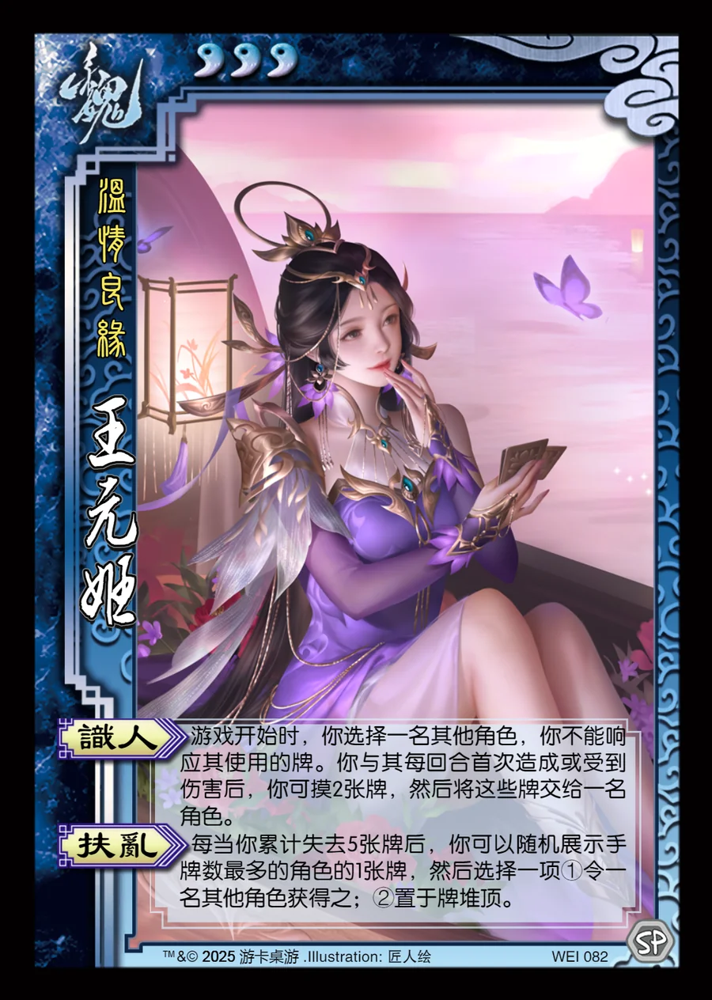

点击卡面查看大图
魏
王元姬
♥3温情良缘
识人
游戏开始时，你选择一名其他角色，你不能响应其使用的牌。你与其每回合首次造成或受到伤害后，你可摸2张牌，然后将这些牌交给一名角色。
扶乱
每当你累计失去5张牌后，你可以随机展示手牌数最多的角色的1张牌，然后选择一项①令一名其他角色获得之；②置于牌堆顶。

点击卡面查看大图
温情良缘
游戏开始时，你选择一名其他角色，你不能响应其使用的牌。你与其每回合首次造成或受到伤害后，你可摸2张牌，然后将这些牌交给一名角色。
每当你累计失去5张牌后，你可以随机展示手牌数最多的角色的1张牌，然后选择一项①令一名其他角色获得之；②置于牌堆顶。